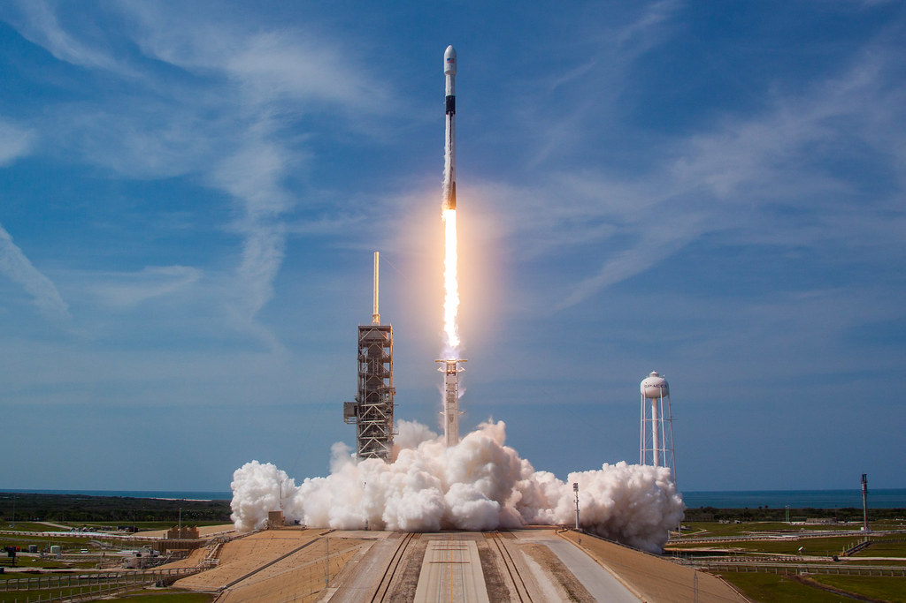
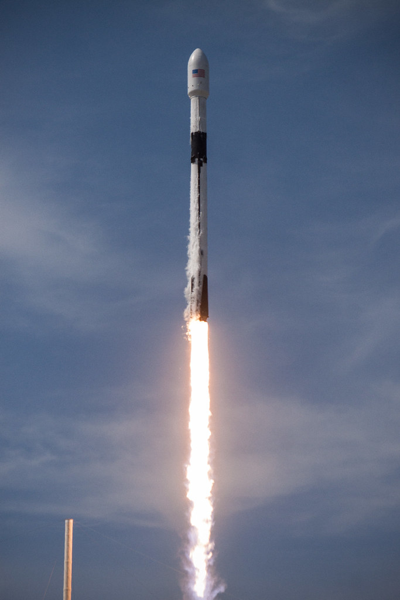
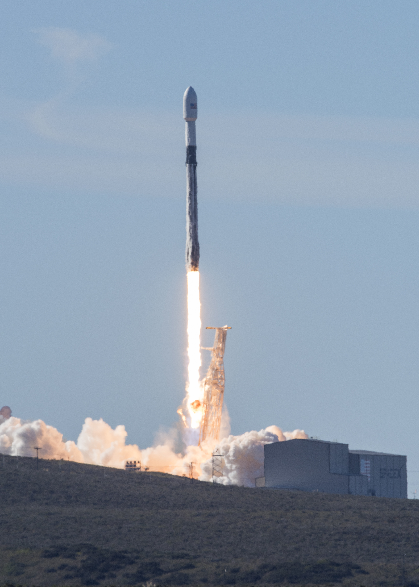
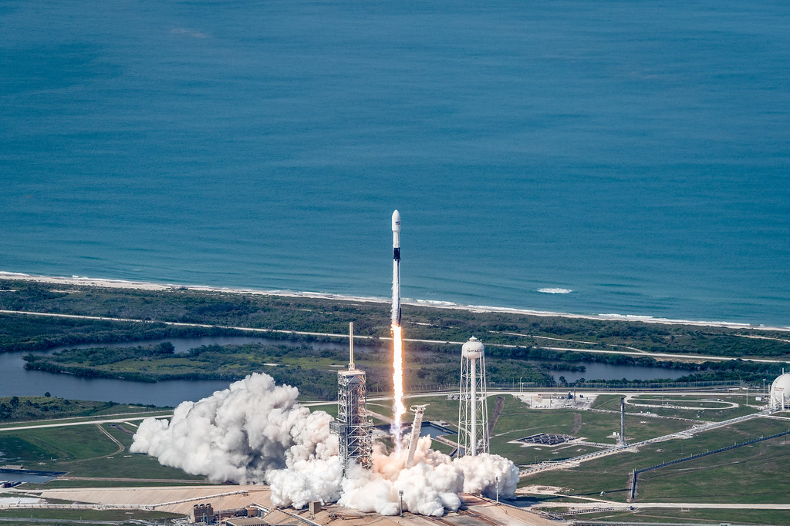

Storia SpaceX · Sedicesima e ultima parte · 2018
Falcon 9 Block 5: l'inizio del dominio di SpaceX
Falcon Heavy ha mostrato la potenza. Block 5 prepara la continuità: il primo stadio non deve soltanto tornare, ma diventare una macchina capace di lavorare ancora e ancora. Qui si conclude il percorso storico generale; da qui cominciano le monografie in divenire.
Il passaggio alle monografieIl cambiamento meno spettacolare, forse il più decisivo
Il debutto di Falcon Heavy aveva riempito il cielo di fiamme e lasciato due razzi in piedi, uno accanto all'altro. Era difficile immaginare una dimostrazione più visibile del nuovo peso di SpaceX. Tre mesi dopo, però, arriva un passaggio meno appariscente e destinato a incidere profondamente sul lavoro dell'azienda. Il lanciatore è ancora Falcon 9. A prima vista, la novità potrebbe sembrare una versione migliorata di una macchina già conosciuta. Il significato è più grande.
Con Block 5 il riutilizzo diventa il centro di un progetto che cerca continuità, non soltanto un secondo volo riuscito. Atterrare era stato il primo ostacolo. Ripartire con un satellite vero aveva dimostrato che il recupero poteva servire al lavoro. Ora bisogna costruire un primo stadio che sostenga ripetutamente quel ciclo, limitando gli interventi necessari fra una missione e l'altra.
È per questo che possiamo chiamare il capitolo «l'inizio del dominio di SpaceX». Non perché l'11 maggio 2018 tutti gli altri lanciatori diventino inutili, né perché il futuro sia già garantito. Il predominio che maturerà dopo richiederà anni, domanda, investimenti e organizzazione. Ma Block 5 mette a disposizione una delle sue basi materiali: una macchina progettata per continuare a volare, dentro un'azienda che ha già imparato a crescere.
Il passaggio è anche un buon punto nel quale chiudere la nostra storia generale. Siamo partiti da un'impresa che doveva riuscire a raggiungere l'orbita per sopravvivere. Arriviamo a un'impresa che deve organizzare una flotta, servire clienti diversi e sostenere programmi sempre più vasti. Non è la fine delle difficoltà. È la fine di una lunga fase nella quale SpaceX doveva soprattutto dimostrare che il proprio modo di lavorare poteva esistere.
11 maggio 2018: un satellite vero, un primo stadio nuovo
Il primo Falcon 9 Block 5 decolla dalla rampa 39A del Kennedy Space Center con Bangabandhu Satellite-1. Sono le 20:14 UTC dell'11 maggio, le 22:14 in Italia; in Bangladesh è già il 12 maggio. La differenza fra le date nei resoconti non indica due lanci: è lo stesso evento osservato da fusi orari diversi. Il primo stadio torna sulla piattaforma Of Course I Still Love You nell'Atlantico, mentre il secondo porta avanti la consegna del satellite. [1]
Per il Bangladesh, Bangabandhu-1 è il primo satellite nazionale per telecomunicazioni geostazionarie. Costruito da Thales Alenia Space, deve fornire servizi televisivi, collegamenti e capacità di comunicazione anche a territori meno serviti. Dietro il debutto del lanciatore c'è quindi un progetto con utenti e obiettivi propri, non un carico scelto soltanto per accompagnare un primato SpaceX. [2]
Questo rende la prova particolarmente significativa. Falcon Heavy aveva volato con un carico dimostrativo; Block 5 comincia la propria carriera trasportando un satellite commerciale. Le esigenze del cliente non sono sospese per consentire al nuovo razzo di presentarsi. Il volo deve riuscire prima di tutto come servizio di lancio. Il recupero aggiunge la possibilità di continuare a usare il primo stadio, senza sostituire il compito che il cliente ha affidato a SpaceX.
Il decollo e l'atterraggio non hanno la sorpresa assoluta delle prime volte. È cambiato ciò che si aspetta dal risultato. Il ritorno non deve restare un momento eccezionale da celebrare e conservare. Deve diventare l'inizio della preparazione per un altro incarico. È una differenza discreta nelle immagini, enorme nel modo di pensare il veicolo.

.jpg){kind=link}
Dieci voli non sono ancora dieci voli fatti
Nel dossier della missione SpaceX presenta Block 5 come l'ultimo aggiornamento sostanziale di Falcon 9. L'obiettivo dichiarato è consentire dieci o più voli con lavori di ricondizionamento molto limitati. Il punto non è soltanto la durata del primo stadio: è quanto lavoro occorra per riutilizzarlo. La promessa riguarda insieme la macchina e il suo ciclo operativo. [3]
Al debutto, naturalmente, tutto questo deve ancora essere dimostrato. Un primo volo riuscito non prova dieci missioni, e non dimostra che fra due lanci sia sufficiente fare rifornimento. Controlli, preparazione, trasporto e integrazione del nuovo carico restano lavori reali. La sfida consiste nel renderli compatibili con un'attività ripetuta, senza affidare il risparmio a una riduzione della prudenza.
Il rapporto fra obiettivo e risultato va conservato anche quando si guarda indietro. Conoscere il successo degli anni successivi rende facile raccontare il 2018 come se tutto fosse già evidente. Non lo era. SpaceX aveva recuperato e riutilizzato hardware, ma doveva ancora imparare fin dove spingersi, quali componenti richiedessero attenzione e come cambiasse un primo stadio dopo più missioni.
La novità sta nell'avere orientato il progetto a questa domanda. Non si cerca soltanto di prolungare la vita di un esemplare particolarmente fortunato. Si cerca di rendere ripetibile una capacità su una famiglia di veicoli. Il riuso può diventare una base industriale soltanto se smette di dipendere da una serie di casi eccezionali.
Progettare anche il ritorno al lavoro
Nella conferenza telefonica del 10 maggio, Musk descrive le modifiche: protezioni termiche più adatte al riuso, alette a griglia in titanio, una struttura di supporto dei motori più robusta, gambe più semplici da richiudere e aggiornamenti dell'elettronica di volo. Alcune soluzioni erano già state provate sulle versioni precedenti. Block 5 le riunisce in un progetto più maturo. [4]
Sono interventi che non servono tutti a far salire il razzo più velocemente. Servono anche a conservarlo e a renderlo gestibile dopo il ritorno. Il rientro espone il primo stadio a calore e sollecitazioni; il recupero richiede operazioni a terra e in mare; la preparazione successiva deve poter contare su componenti e procedure adatti a quel lavoro.
La differenza fra una macchina che sopravvive e una macchina che lavora ripetutamente sta spesso qui. Un elemento difficile da controllare o da ripristinare può diventare un limite anche quando resiste al volo. Se ogni rientro richiede un intervento lungo e complicato, la disponibilità del veicolo ne risente. Il progetto deve pensare al lancio, ma anche alle ore e ai giorni che seguono l'atterraggio.
Il nome «ultimo aggiornamento sostanziale» non significa quindi un razzo congelato per sempre. Musk distingue una configurazione di base da stabilizzare dai perfezionamenti che potranno continuare con l'esperienza di volo. [4] È una scelta importante: continuare a imparare senza dover ricominciare ogni volta da una grande revisione del sistema.

.jpg){kind=link}
Il razzo comincia ad avere una carriera
Il primo stadio del debutto torna a volare il 7 agosto 2018 con Merah Putih, dalla rampa SLC-40. SpaceX indica esplicitamente nella presentazione della missione che quel booster aveva già sostenuto Bangabandhu-1. Il primo Block 5 passa così dalla promessa del riuso al proprio secondo incarico. [5]
Il 3 dicembre lo stesso primo stadio parte da Vandenberg per SSO-A: SmallSat Express. Il dossier SpaceX elenca le due missioni precedenti; la documentazione fotografica dell'Air Force conferma il decollo effettivo di dicembre. Sono tre voli nel 2018, per tre campagne diverse, non dieci missioni già compiute al debutto. Il nuovo viaggio porta una missione condivisa da numerosi piccoli satelliti. [6]
Questa sequenza rende concreta l'idea di carriera. Prima si costruiva un primo stadio per una partenza. Ora lo stesso esemplare può entrare in più campagne, su rampe diverse, con altri carichi. La sua storia di volo diventa parte del lavoro: che cosa ha fatto, come è tornato, quali verifiche ha superato, quale missione può affrontare dopo.
Non è il riutilizzo dell'intero Falcon 9. Il secondo stadio resta consumabile: ogni nuova missione richiede un nuovo stadio superiore. [7] Il salto industriale riguarda una parte fondamentale del lanciatore, non una macchina interamente conservata. Questa distinzione non riduce il risultato; permette di capire su quale parte del processo SpaceX stia intervenendo.
Una flotta riutilizzabile modifica anche il rapporto con la produzione. Non si smette di costruire razzi, e non spariscono i costi delle missioni. Ma una nuova partenza può essere servita da un primo stadio già disponibile. Il ritmo dei voli non deve più corrispondere, uno a uno, al ritmo con cui si completa un nuovo booster. È una possibilità che va organizzata, non un beneficio che si ottiene automaticamente dal solo atterraggio.

Il vantaggio non è soltanto nel prezzo
Parlare di dominio significa guardare oltre il primato di un giorno. Un'azienda può realizzare una missione straordinaria e restare limitata nella propria capacità di servire il mercato. Per diventare dominante deve poter rispondere alla domanda con continuità. Deve avere veicoli, rampe, squadre, disponibilità e un'organizzazione che regga l'aumento del lavoro.
Block 5 non crea da solo tutto questo. Si inserisce nella crescita già iniziata e ne rafforza una delle condizioni: il primo stadio può tornare a essere una risorsa disponibile, invece di essere ricostruito per ogni lancio. Il vantaggio cercato comprende i costi, ma anche l'uso degli impianti, la pianificazione e la possibilità di sostenere un numero crescente di missioni.
È qui che cambia il confronto con gli altri operatori. Non basta domandarsi se un razzo concorrente possa portare un satellite nella stessa orbita. Bisogna chiedersi quante missioni possa servire, con quali tempi e con quale impiego della propria produzione. Il riuso introduce un'altra variabile nella competizione. Il valore non sta soltanto nel singolo volo, ma nel modo in cui quel volo entra in una serie.
Non possiamo ricavare una contabilità completa da una fotografia del booster recuperato. Costo industriale, prezzo al cliente e margine sono grandezze diverse. Ma non serve inventare una percentuale di risparmio per vedere il cambiamento: un bene complesso, costruito per affrontare il lancio, può lavorare più volte. Quanto renda dipende da come viene impiegato e da quanto lavoro richieda mantenerlo disponibile.
La parola «inizio» nel titolo è quindi essenziale. Nel maggio 2018 non stiamo misurando una supremazia già compiuta. Stiamo riconoscendo l'avvio di una fase nella quale il vantaggio può accumularsi attraverso il lavoro ripetuto. Il Block 5 non è la spiegazione unica della crescita successiva di SpaceX, ma è una delle macchine che la rendono possibile.

.jpg){kind=link}
Il primo volo, nella diretta SpaceX
Diretta ufficiale SpaceX. Video incorporato, non scaricato o ripubblicato.
Una base stabile per responsabilità nuove
Il riuso non è l'unica ragione del lavoro su Block 5. Musk lega il progetto anche ai requisiti per il volo umano della NASA e all'affidabilità richiesta dai clienti militari. [4] Affrontare più missioni non può significare trattare ogni carico come una semplice occasione per aumentare il contatore. Alcuni incarichi richiedono una responsabilità ancora più grande.
Nel 2018 il programma Crew Dragon è ancora impegnato in prove, integrazione e preparazione. Il bilancio NASA di quell'anno descrive il lavoro sulla navicella e sul Falcon, con test e verifiche da completare prima dei voli con astronauti. [8] Il debutto di Block 5 non certifica da solo l'intero sistema per trasportare persone. Prepara una parte del percorso, che avrà la propria storia.
Intanto resta la direzione più lontana: Marte e il veicolo destinato a tentare un'altra scala di riutilizzo. Ma l'ambizione futura ha bisogno di un presente che funzioni. Falcon 9 deve continuare a portare carichi in orbita, mentre altri programmi assorbono lavoro e risorse. Stabilizzare la famiglia Falcon non significa rinunciare a cambiare le cose; significa avere una base sulla quale affrontare il cambiamento successivo.
La storia di SpaceX, arrivata qui, non ha più un solo centro. Ci sono il servizio di lancio, il trasporto umano, le costellazioni e il grande progetto che prenderà forma a Boca Chica. Raccontare tutto soltanto come una successione di capitoli annuali rischierebbe di separare ciò che appartiene allo stesso programma e di mescolare vicende che chiedono invece un approfondimento proprio.
La parte storica è completa. Da qui, le monografie in divenire
Con questo capitolo si conclude il percorso storico generale di Rivoluzione Spaziale dedicato a SpaceX: dalla fondazione al Falcon 1, dalla nascita di Falcon 9 e Dragon alle crisi, ai primi atterraggi, al riuso e all'arrivo di Falcon Heavy e Block 5. La scelta di fermarci qui è editoriale. La storia dell'azienda continua, ma abbiamo completato il racconto delle origini e del passaggio a una forza industriale capace di sostenere la propria espansione.
Da questo punto procederemo soprattutto attraverso monografie approfondite, dedicate ai singoli programmi e aggiornate mentre quei programmi si sviluppano. Non sarà attualità senza memoria: ciascuna monografia ricostruirà la propria storia, spiegherà le scelte tecniche e seguirà missioni, difficoltà, risultati e prospettive. Il passato resterà dentro il racconto, senza imporre a tutti i programmi la stessa scansione cronologica.
Le prime direttrici saranno Crew Dragon, con la sua storia e il suo presente, e Boca Chica e Starship, dalle origini ai nuovi sviluppi. La prima ci porterà dentro la responsabilità del volo umano; la seconda nel tentativo di costruire un sistema diverso, passando per i veicoli sperimentali, le infrastrutture e le prove. Sono monografie da sviluppare, non articoli già pubblicati: questa pagina ne annuncia il criterio.
Una monografia in divenire non dovrà fingere che ogni questione sia risolta. Dovrà distinguere i risultati dalle intenzioni, le missioni concluse dai tentativi futuri, ciò che è documentato da ciò che resta da capire. Potrà crescere, essere corretta e arricchirsi senza perdere il filo del programma che racconta.
Il Block 5 chiude così la nostra storia generale e apre il modo nuovo di seguirla. SpaceX non deve più soltanto dimostrare di poter arrivare. Deve dimostrare quanto lontano, quanto spesso e con quali responsabilità saprà continuare.
Fonti e documenti
Il titolo esprime una lettura storica: l'inizio di un vantaggio industriale destinato a maturare, non un monopolio raggiunto nel maggio 2018. Gli obiettivi annunciati sono distinti dai voli effettivi.
- [1] SpaceX, Bangabandhu Satellite-1 Mission, diretta dell'11 maggio 2018. Debutto, inserimento del carico e recupero del primo stadio. L'11 maggio UTC corrisponde al 12 maggio in Bangladesh.
- [2] Thales Alenia Space, Bangabandhu Satellite 1 successfully launched, maggio 2018. Fonte del costruttore sul lancio e sui servizi del satellite.
- [3] SpaceX, Bangabandhu Satellite-1 Mission, press kit, maggio 2018. Documento originale in archivio indipendente: ultimo aggiornamento sostanziale, obiettivo di dieci o più voli con ricondizionamento limitato. Il programma temporale prevolo non sostituisce il consuntivo.
- [4] Conferenza telefonica SpaceX del 10 maggio 2018, trascrizione pubblica non ufficiale delle dichiarazioni di Musk. Modifiche e finalità del progetto. Si riportano le dichiarazioni come intenzioni del costruttore, non come certificazioni indipendenti.
- [5] SpaceX, Merah Putih Mission, diretta del 7 agosto 2018. Il primo stadio aveva già lanciato Bangabandhu-1. La pubblicazione del video precede il decollo UTC del 7 agosto.
- [6] SpaceX, SSO-A: SmallSat Express, dossier prevolo di novembre 2018. Identifica il primo stadio delle due missioni precedenti; U.S. Air Force, fotografia e didascalia ufficiali del lancio del 3 dicembre 2018, confermano la data effettiva. La data indicativa del dossier non viene confusa con quella del volo.
- [7] SpaceX, Falcon 9. Architettura a due stadi e riutilizzo del primo. La scheda del veicolo non rende il secondo stadio riutilizzabile.
- [8] NASA, Commercial Crew Program, bilancio 2018. Prove e preparazione di Crew Dragon e Falcon 9. Le date future prospettate allora non sono usate come date effettive dei voli successivi.
Fotografie utilizzabili
Quattro immagini storiche autentiche: tre SpaceX con dedica CC0 e una U.S. Air Force in pubblico dominio, con attribuzione al fotografo. Nessuna immagine generata. Registro di provenienza e condizioni. Nessuna approvazione del sito da parte di SpaceX o del Dipartimento della Difesa è implicata.